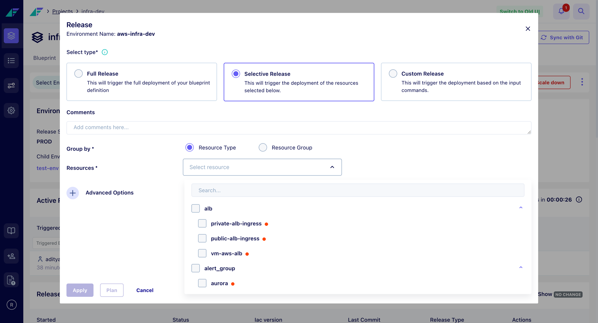
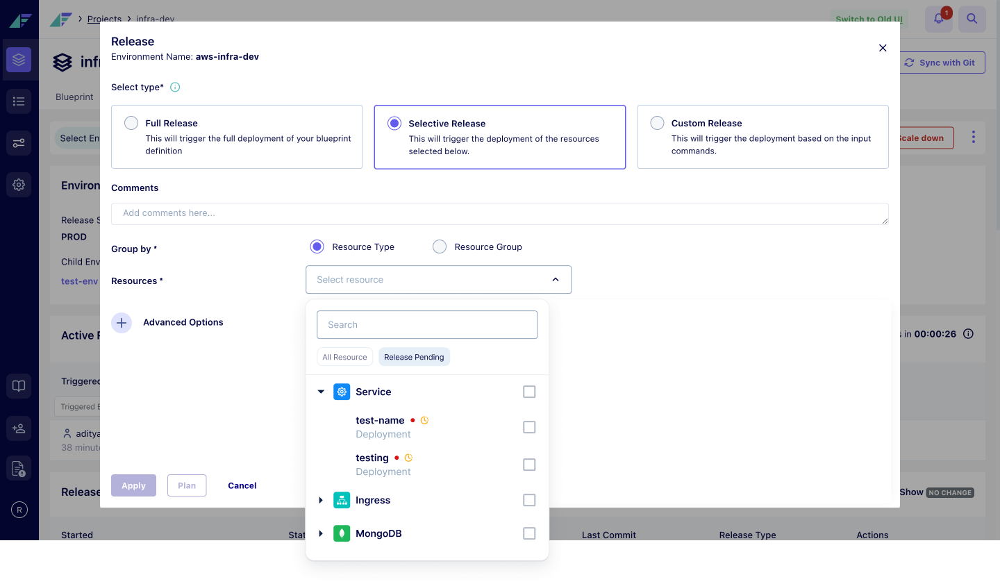
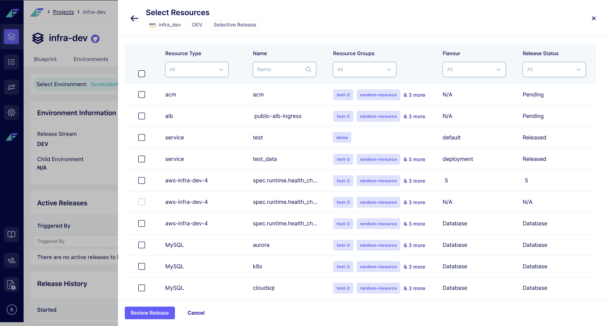
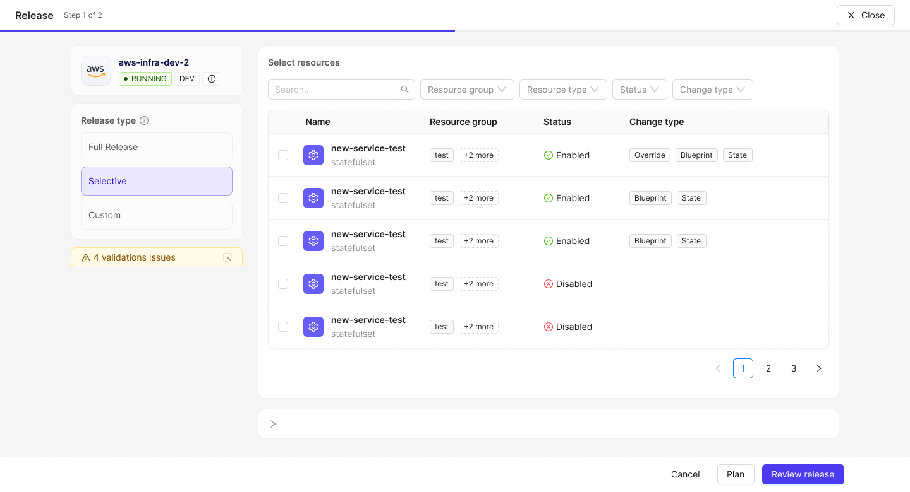
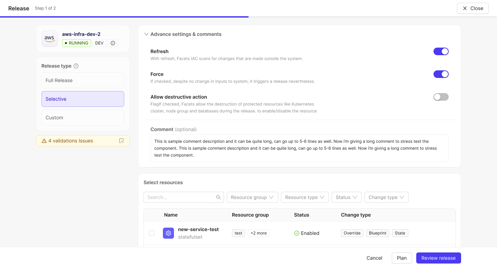
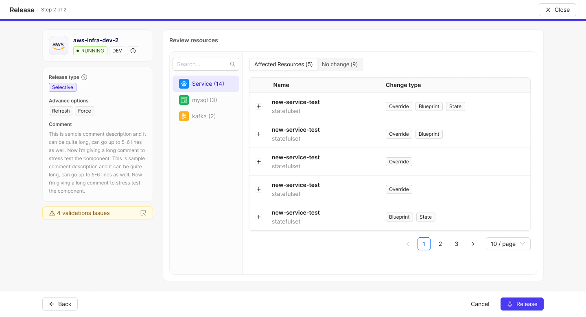

Pushing a change to live infrastructure. The most-used flow in the Facets control plane, running across 30+ companies in production.
Owned the research, the IA and every design decision. Worked in the codebase and shipped some screens.
A release takes a change someone has made and applies it to the servers customers are actually using.
Several times a day, across multiple services.
1,000 to 2,000 resources in a single environment at a larger customer.
Creates, updates and deletes real servers and databases.
A bad release is fixed with another release, while the product is down.
90% of the time users ignored the validation and released anyway. They were warnings. Only errors got fixed.
Every decision was crammed into one small modal. The most important one, picking resources, got buried with the rest.
No review step before Apply. You never saw what you were about to push.

A critical flow packed into a small modal, when it needed a full page.
1Release type took most of the space; picking resources got one dropdown.
2The CTAs weren't clear. Apply didn't say what it would do.
3Search was the only tool. No filters, no sorting.
4 resources visible at a time, out of a thousand or more.
Status showed enabled or disabled, not what had pending changes.
The release modal with the resource picker open.
Enhancement requests on the release flow: filters, bulk select, pending-change visibility.
A release asks four things of you. One goal each.
You had to know what to release before you opened the flow.
You couldn't see what a release would do.
Warnings interrupted every release and got dismissed every time.
You could reach the release button without ever noticing which environment you were in.
I wasn't allowed to change the flow, so I worked inside the dropdown. Two filters, All Resource and Release Pending, a pending marker on every row, and the resource type as an icon.
Everything outside the dropdown stayed as it was — no preview, the same validation dialog, the environment still named once at the top.
Dropped. It clears one goal of four, and a dropdown is the wrong control for choosing from a thousand resources.

Two filters and a pending marker, inside the control that was already there.
Redesigned the flow as three steps. Settings, then the dropdown as a filterable table, then a review step showing what each resource would change.
More steps than people had before, and changing your mind in step two sent you back to step one.
Cut to the table plus the review step. Never built, because everything new was going into React, but that scope became the spec.

Step 2 of 3. Five filters replace the search box. This is the part that survived.
The gate is gone. Validation opens beside the flow and puts you back where you were.
Choosing what to release is a step, not a field inside a modal.
A review step exists. Nothing goes out without you seeing what it will do.
One full panel instead of a modal, split by weight. Selecting resources on the right because that's the actual work. Release type, settings and validation in the left rail.
A routine one-resource release gets slower, because review is a step of its own.
Shipped. Simplified twice on the way — validation became a tag, and change detail moved out of selection into review.

Step 1 of 2. The table is the screen, and the rail never competes with it.

The table is the screen. Type and settings sit in the rail.

Open any resource and see what it will do. Every step-1 choice in the rail.
ReleasePage.tsx:126 renders Step ${isReviewStep ? 2 : 1} of 2. Offer to run it live here. No click counts.
ReleaseOptionsDrawer.tsx :543, :546, :620-621 — all demoable live.
A resource missed, the wrong environment, or config that went out unreviewed. The release ran fine. It did the wrong thing.